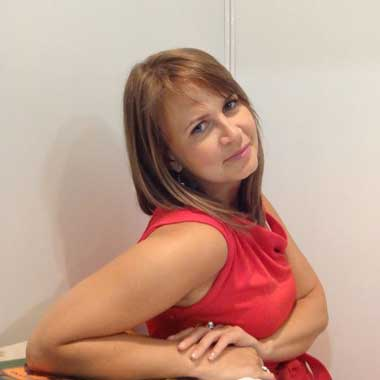

Архитектурные краски
-
Полиэфирные порошковые краски
Стойкость к воздействию атмосферных факторов, влаги и УФ-излучения. Широкий диапазон цветов, различный уровень глянца и структуры покрытий, возможность получения необычных декоративных эффектов.
Полиэфирные порошковые краски, сертифицированные по стандартам Qualicoat и GSB — это материалы с максимально высокими показателями атмосферостойкости и физико-механических свойств.
Они предназначены для окраски архитектурных сооружений, где требуется длительное сохранение декоративных свойств покрытия, а также отличная защита от коррозии окрашенного металла.
Предназначены для окраски изделий, эксплуатирующихся на улице.
- архитектурные элементы
- сельскохозяйственная техника
- детские площадки
- промышленное оборудование
-
Порошковые краски с эффектом «металлик»
Краски с металлическими пигментами или пигментами на основе слюды.
Возможно получить покрытия «под хром», «под золото», «под бронзу», «под анодирование» и другие эффекты.
«Металликами» окрашивают изделия для создания высокодекоративных покрытий.
- мебель, двери, фурнитура
- решетки, обрамления, кронштейны
- архитектурные элементы
- интерьерные элементы
- диски автомобильных колес
-
Полиуретановые порошковые краски и лаки
Используются, когда требуется высокая стойкость к истиранию или для окраски поверхностей, подвергающихся частой чистке.
Широкая палитра цветов, различные структуры покрытия, наличие красок с металлическим эффектом.
- автомобильные диски
- промышленное оборудование
- спортивные тренажеры и инвентарь
- поручни, перила
- антивандальные покрытия
Специальные материалы
-
Токорассеивающие порошковые краски
Позволяют получить покрытие с антистатическими свойствами и применяются для окраски изделий, для которых исключается накапливание электрического заряда на поверхности.
-
Порошковые лаки
Могут быть на полиэфирной или полиуретановой основе, глянцевые и матовые.
Применяются для защиты покрытий типа «металлик» от вытирания с поверхности металлической пудры, для повышения износостойкости покрытия.
Лаки могут быть бесцветными и цветными: красными, синими, зелеными.
Декоративные эффекты достигаются применением лаков с блестками.
-
Порошковый грунт
Эпоксидные или эпоксидно-полиэфирные материалы, использующиеся в качестве подслоя под обычные полиэфирные покрытия.
Повышают коррозионную стойкость и долговечность покрытия за счет содержания фосфата цинка.
-
Тонкослойные порошковые краски и лаки
Эпоксидно-полиэфирные или полиэфирные материалы, предназначенные для тонкослойного нанесения.
Обладают высокой укрывающей способностью и могут наноситься толщиной 40 мкм.
-
Термостойкая шпатлевка
Двухкомпонентный материал для устранения дефектов металла перед нанесением порошковой краски.
Термостойкость до 500°С.
-
Текстурирующая добавка
Специальная добавка для порошковой краски, позволяющая получить из гладкого покрытия текстурированное покрытие типа «апельсиновая корка».
В зависимости от количества добавки (от 0,5 до 0,9 % масс.) можно добиться мелкой или крупной текстуры покрытия.
-
Матирующая добавка
Добавка в порошковую краску, позволяющая снизить блеск покрытия.
Добавление 1% добавки позволяет снизить блеск покрытия на 1%.
Максимально снизить блеск можно на 30%.
При добавления большего количества добавки ухудшаются физико-механические свойства покрытия.
Наши специалисты:
-
Александр Харченко
начальник отдела продаж, главный по работе с регионами
-

Дарья Толмачева
технический специалист, окончила кафедру «Химия и технология органических покрытий» СПбГТУ, главная по технической поддержке
-
Светлана Лукашева
технический специалист, окончила кафедру «Химия и технология органических покрытий» СПбГТУ, автор и ведущая Инстаграм-канала @kraskiinver
-

Игорь Шубичев
специалист по логистике, главный по быстрой доставке краски по России
Наши специалисты помогут Вам с организацией участка окраски, помогут подобрать технологию подготовки поверхности, подберут необходимые порошковые материалы, помогут рассчитать расход и организуют доставку краски до Вашего предприятия.
Запрос на помощь технического специалиста